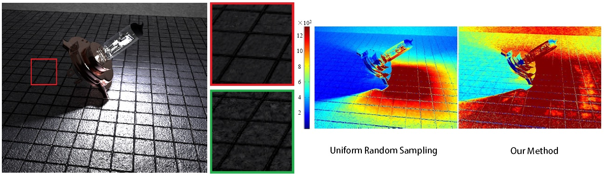

Improved Stochastic Progressive Photon Mapping with Metropolis Sampling
Jiating Chen,
Bin Wang, and Jun-Hai Yong
School of Software, Tsinghua University
Computer Graphics Forum, volume 30, Number 4 (Proceedings of the EGSR2011), to appear.
Abstract

This paper presents an improvement to the stochastic progressive photon mapping (SPPM),
a method for robustly simulating complex global illumination with distributed ray tracing effects.
Normally, similar to photon mapping and other particle tracing algorithms,
SPPM would become inefficient when the photons are poorly distributed.
An inordinate amount of photons are required to reduce the error caused by noise and bias to acceptable levels.
In order to optimize the distribution of photons, we propose an extension of SPPM with a Metropolis-Hastings algorithm,
effectively exploiting local coherence among the light paths that contribute to the rendered image.
A well-designed scalar contribution function is introduced as our Metropolis sampling strategy,
targeting at specific parts of image areas with large error to improve the efficiency of the radiance estimator.
Experimental results demonstrate that the new Metropolis sampling based approach maintains the robustness
of the standard SPPM method, while significantly improving the rendering efficiency for a wide
range of scenes with complex lighting.
Downloads
Acknowledgements
We would like to thank Yuxiang Wang, Dong Li, Tianqian Zhu and Peng Liu for discussions
and the anonymous reviewers for their insightful comments and suggestions.
The research was supported by Chinese 973 Program (2010CB328001),
the National Science Foundation of China (61035002, 61003096) and Chinese 863 Program (2010AA186002).
The third author was supported by Tsinghua University Initiative Scientific Research Program(2009THZ0)
and the Fok Ying Tung Education Foundation (111070).
The bulb scene is provided by Timothy James Armstrong.
The torus scene is from Hachisuka et al. [HOJ08].
The room, the Killeroos, and the Villa scenes are from PBRT [PH10].